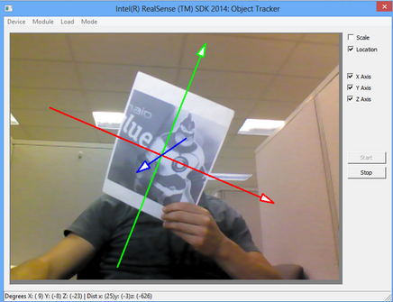
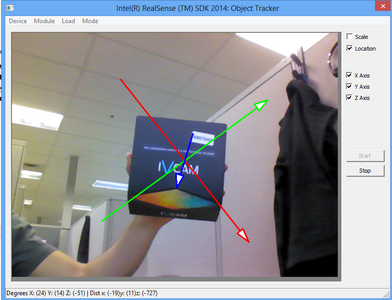
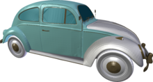
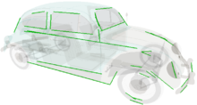

Tracking Techniques
The Metaio* 3D object tracking module provides optical-based tracking techniques that can detect and track known or unknown objects in a video sequence or scene. The Metaio Toolbox is provided to train, create, and edit 3D models that can be passed to various object detection and tracking algorithms.
Table 12 provides an overview of various tracking techniques and how they can be configured.
Tracking Method |
Configuration/Input |
2D objects tracking (planar objects) |
Input a reference image. |
Feature based 3D tracking |
Use the toolbox to create a point cloud. Save the configuration in a .slam file. |
Edge based 3D tracking from CAD models |
Provide a CAD model (.obj) and use the Edge Creation tool to extract prominent edges and then save the configuration in a .xml file. |
Instant 3D tracking |
Track the camera ego motion in an unknown configuration. |
Table 12: The Tracking Techniques
Object Tracking
The 2D tracking algorithm is configured with a reference image. The algorithm tracks the image in a video sequence and returns the tracking parameters. The application can augment the scene with any 3D objects, such as the 3D reference axes as illustrated in Figure 35.
 |
Figure 35: Markerless 2D Tracking with Reference Image (left) and Augmented with 3D Model (Right)
Feature Based 3D Tracking
The 3D feature-based tracking can track any real world 3D object. The tracking is based on a 3D feature map, a *.slam file that can be generated using the provided Metaio Toolbox application. The toolbox can further edit and append the 3D maps for later or more sophisticated usage. See Figure 36 for an example of 3D feature-based tracking in action.

Figure 36: Feature-based 3D Tracking
Edge Based 3D Tracking From CAD Models
For better tracking of objects with the features that are hard to detect, the SDK provides a more precise edge-based 3D markless tracking algorithm. For example, the following objects are usually difficult to track in feature-based 3D tracking:
| • | Low-textured or highly specular (reflective) objects |
| • | Objects changing their appearances over time, for example, a building that changes its color after painting its facade. |
| • | Objects in different/dynamic lightening conditions, for example, adding high level of invariance to illumination. |
The edge based 3D tracking algorithm uses a 3D CAD model, mesh model, or 3D-point cloud of the target object as input. Usually, the 3D model comes as a wavefront .obj file exported from any content creation or CAD tool. The Metaio Toolbox processes the 3D model to extract edge features and create an .xml 3D map as the algorithm input, as illustrated in Figure 37.

Figure 37: CAD Model of a Car (Left) and Extracted Edges (Right)
Instant 3D tracking
Instant 3D tracking feature enables the capability of the creation of the point cloud (3D map) of the scene on the fly and immediately use it as a tracking reference.
The main advantage of the instant 3D tracking, also commonly referred to as the SLAM technology, is that the user doesn't need any input map file or an input planar image in order to track objects in a scene. The SLAM learns the surrounding on the fly and tracks object in a scene automatically and in real time.
See Known Limitations for the usage restrictions.
SLAM and Extensible Learning
Similar to 3D instant tracking, the 2D and 3D feature based tracking supports an extensible (learning) mode, where additional feature points are acquired from the environment. This may improve tracking performance in certain scenarios. However, the learning algorithm assumes that the tracked objects do not move with respect to the environment, the so called “rigid world” assumption. For user facing cameras, this assumption may not hold true as the camera position is fixed and the objects move in the camera field of view. You may need to experiment to see if this mode helps in your application scenarios.
Extensible tracking is available for 2D and 3D object tracking. During the tracking process, features are learned from the environment and appended to the input map. This can result in more accurate tracking, but requires that the tracked object remains fixed with respect to the rest of the scene. For example, tracking the board of a game fixed on a table is a good use case, while tracking objects on that board which move should not use extensible tracking.
3D Instant tracking or instant scene tracking detects features in the scene (environment), and attempts to track movement of that scene. Additional features are continually being added as well, similar to extensible tracking. Therefore, some use cases will detect and track objects much better than others. The largest limiting factor is whether the background has features which are detected in addition to the target object. If enough background features are static with respect to the moving target object, instant scene tracking will not perform well.
 Detected features in a scene can be visualized through the toolbox while training a model. The same features are used for instant tracking.
Detected features in a scene can be visualized through the toolbox while training a model. The same features are used for instant tracking.
One scenario which works well is tracking a user (head and shoulders) against a plain background such as a wall. Since almost all of the detected features will be on the user, the user can be successfully tracked in front of the wall. If the user is holding an object in their hands, the object itself is unlikely to be tracked accurately in this release. Instead, the user-object combination will be tracked as one entity.
3D edge based tracking is especially useful for tracking objects which do not have a large set of features. Typical characteristics which limit feature extraction include smoothness, dark and/or uniform coloring and shininess. A black ceramic vase may be a good candidate for edge based tracking.
Tips
2D tracking may be unreliable depending on the exact source image and the environment in which tracking occurs (lighting, distorted printed tracking target, etc). In general, 2D tracking is much more reliable if the image has been directly captured from the camera in the environment, since this captures local lighting and printing distortions. Alternatively, a 3D map may be created ahead of time from a printed 2D pattern. 3D tracking is much more tolerant of image differences and lighting variations. For example, a hand-drawn copy of a simple symbol may be tracked just like the printed version if the proportions are accurate.